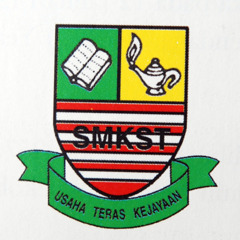
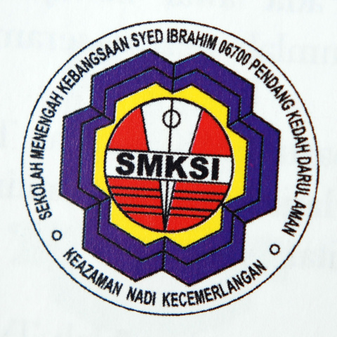

Student ID: 2019475482
Group: KIM2443B
Course Code: IMS456
Course Name: Basic Web Design & Content Management
Faculty: Faculty of Information Management
Submission Date: 20 December 2020
Education
|  |  |  |
|
| Sekolah Kebangsaan Kampung Baru | Sekolah Menengah Kebangsaan Sungai Tiang | Sekolah Menengah Kebangsaan Syed Ibrahim | Universiti Teknologi Mara |
|---|---|---|---|
| I am studies at this school from grade 1 until grade 6. | I continued my studies to the secondary school level from form 1 until form 5. | After that, I continued my studies for form 6 and stayed at this school for 1 year and a half. | So now, I have continue my studies at university level with a major that I have been applied. |